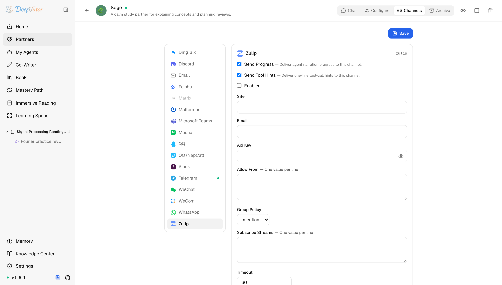

夥伴與管道Zulip
DeepTutor 接入 Zulip 教學！1 個 topic 獨立會話，數學公式原樣輸出，團隊討論不串線！
為 Partner 設定 Zulip channel —— event-queue long polling，session 按 stream + topic 劃分。
原文連結：https://docs.deeptutor.info/zh-cn/partners/zulip/
用 Zulip 搭團隊聊天的朋友，你們的專屬教學來了。
Zulip 是一款主打結構化討論的團隊聊天工具，最大的特色是把對話切分成 stream（話題流）和 topic（話題）。DeepTutor 的 zulip 管道完整保留了這套結構：每個 (stream, topic) 組合就是一個獨立的 Partner 會話（session），每條作業討論、每個支援 topic 都帶著自己的上下文，互不串線。私聊也支援，按傳送者各自隔離。
但是問題來了。Zulip 的機器人（bot）要在後台建立，還要處理訂閱、驗證這些細節，第一次設定很容易踩坑。
接下來，我們就從建立 bot 開始，一步步把它接好。天天寫公式的朋友看到最後，還有一個大驚喜。

Partner 執行時先看卡片即時狀態：它應顯示事件監聽器（listener）已連線/執行；只有失敗狀態需要更多細節時再查日誌。
一、安裝依賴
Zulip 支援包含在 Partners 可選元件（extras）裡，zulip 使用者端包隨之安裝，別的不用裝。
pip install -e ".[partners]"
# 或发布包支持 partners extras 时：
pip install "deeptutor[partners]"二、在 Zulip 裡建立 bot
- 在 Zulip 中點右上角齒輪圖示 -> Organization （或 Personal ） settings -> Bots 。
- 點 Add a new bot ，類型選 Generic bot ，起個名字。
- Zulip 會生成一個 bot 信箱，形如
my-bot@yourorg.zulipchat.com，Email 欄位填的就是它，不是人的信箱。 - 在同一頁複製 bot 的 API key 。
- Generic bot 預設能收到私聊，但只有訂閱了某個 stream 才能看到它。可以在 Zulip 的 bot 設定裡訂閱，也可以用下面的 Subscribe Streams 讓 DeepTutor 代勞。
三、設定管道卡片（channel card）
開啟 Partners -> 你的 partner -> Channels -> Zulip。
| 欄位 | 怎麼填 |
|---|---|
| Send Progress | 測試時建議開啟。長任務會投遞過程解說（narration）。 |
| Send Tool Hints | 除錯時建議開啟；不想讓使用者看到一行工具呼叫就關掉。 |
| Enabled | 準備啟動管道時再開啟。 |
| Site | 你的 Zulip 伺服器 URL，比如 https://yourorg.zulipchat.com 。要帶 scheme，realm 子網域要寫對。 |
| 建立頁生成的 bot 信箱——不是你自己的。 | |
| Api Key | bot 的 API key。按金鑰儲存。 |
| Allow From | 一行一個 Zulip 使用者 id 或信箱，兩種寫法都能匹配。開放測試可填 * 。空列表拒絕所有人。 |
| Group Policy | 針對 stream 訊息： mention （預設）只在 bot 被 @ 時回答， open 對已訂閱 stream 的每條訊息都答。私聊永遠會回覆。 |
| Subscribe Streams | stream 名，一行一個。管道啟動時會替 bot 訂閱它們。 |
| Timeout | 事件佇列（event queue）長輪詢（long-poll）逾時秒數。預設 60 適用於大多數伺服器。 |
四、儲存之後
- 點 Save ，開啟 Enabled 後再儲存一次。
- 啟動 partner：從 UI 操作，或
deeptutor partner start <partner-id>。已經在跑就重新啟動。 - 私聊 bot，或在已訂閱的 stream 裡 @ 它。
- 回覆正常之後，把 Allow From 裡的
*換成真實使用者 id 或信箱。
更有意思的是，數學公式不會在路上丟掉：管道會把回覆裡標準的 $...$ 和 $$...$$ 轉成 Zulip 原生的 KaTeX 格式。對學術團隊來說，這個細節必須給好評。
如何確認健康
健康的 Zulip 管道有三個跡象：
- 日誌顯示事件佇列已註冊、設定的 stream 已訂閱；
- 私聊 bot 能收到回覆；
- 在已訂閱的 stream 裡 @ 它，能在同一個 topic 裡收到回覆。
常見問題
bot 看不到 stream 訊息
通常是兩種原因。bot 沒訂閱這個 stream，去 Zulip 的 bot 設定裡加，或用 Subscribe Streams。或者 Group Policy 是 mention 而訊息沒有 @ 到 bot；@ 一下，或把策略改成 open。
啟動時報驗證錯誤
把三件套重新核對一遍：Site 必須是帶正確 realm 子網域的完整 URL，Email 必須是 bot 的生成信箱，Api Key 必須和這個 bot 對得上。在 Zulip 裡重新生成 key 會讓舊的失效，輪換後記得更新卡片。
日誌裡出現 BAD_EVENT_QUEUE_ID
伺服器重新啟動或長時間空閒後事件佇列會過期。管道會自動重新註冊，不用管。如果反覆不停地出現，去檢查 Zulip 伺服器本身的健康狀況。
部署過程遇到問題，歡迎在留言區留言，把報錯的完整日誌貼出來，我看到會回覆。